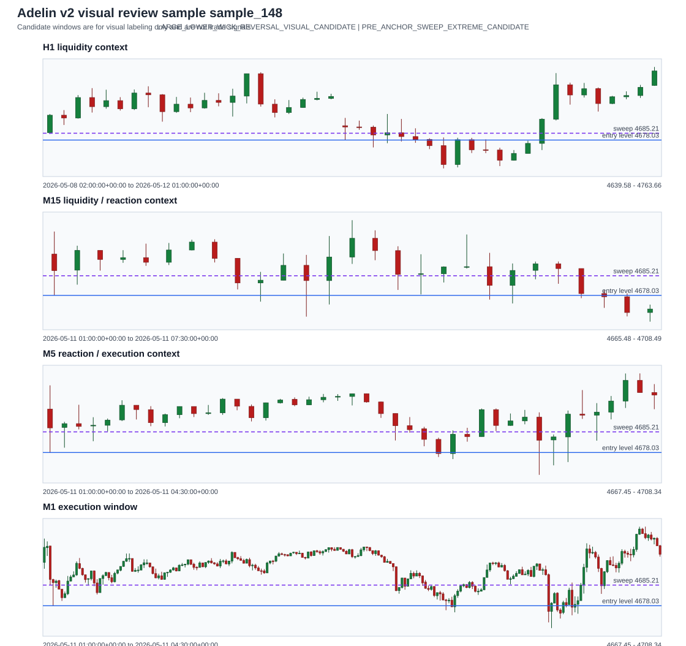

Candidate windows are for visual labeling only and are not trade signals. No live deployment, Telegram alert, broker call, or order path is involved.

Metadata
| sample_id | sample_148 |
|---|---|
| source_mode | CANDIDATE_WINDOW_MODE |
| symbol | XAUUSD |
| direction_guess | SHORT |
| direction_confidence | MEDIUM |
| anchor_timestamp | 2026-05-08T11:30:00+00:00 |
| anchor_timeframe | M15 |
| anchor_date | 2026-05-08 |
| month | 2026-05 |
| session | NEW_YORK |
| candidate_source_type | SWEEP_EXTREME |
| entry_level_source | SWEEP_EXTREME |
| entry_level_confidence | LOW |
| entry_level_price | 4722.51 |
| entry_level_is_heuristic | True |
| volatility_bucket | MID_VOLATILITY |
| execution_data_status | REVIEWABLE_M1_M5 |
| m1_candles_count | 271 |
| m5_candles_count | 55 |
| m15_candles_count | 19 |
| h1_candles_count | 5 |
| execution_window_start | 2026-05-08T10:00:00+00:00 |
| execution_window_end | 2026-05-08T14:30:00+00:00 |
| candidate_reason_codes | LARGE_UPPER_WICK_REVERSAL_VISUAL_CANDIDATE, PRE_ANCHOR_SWEEP_EXTREME_CANDIDATE |
| sweep_level | 4722.1 |
| number_theory_level | |
| distance_to_number_level_pips | |
| reaction_zone_guess | unknown reaction zone; manual validation required |
| old_trade_id | |
| old_score | |
| old_setup_mode | |
| old_entry_price | |
| old_stop_loss | |
| old_take_profit |
Manual Label Guidance
Use the CSV template to judge liquidity quality, reaction-zone validity, target availability, stop feasibility, post-entry reaction, and whether this is A+ reversal, valid reversal, dirty/no-trade, continuation blocked, rare IFVG continuation candidate, or unknown.